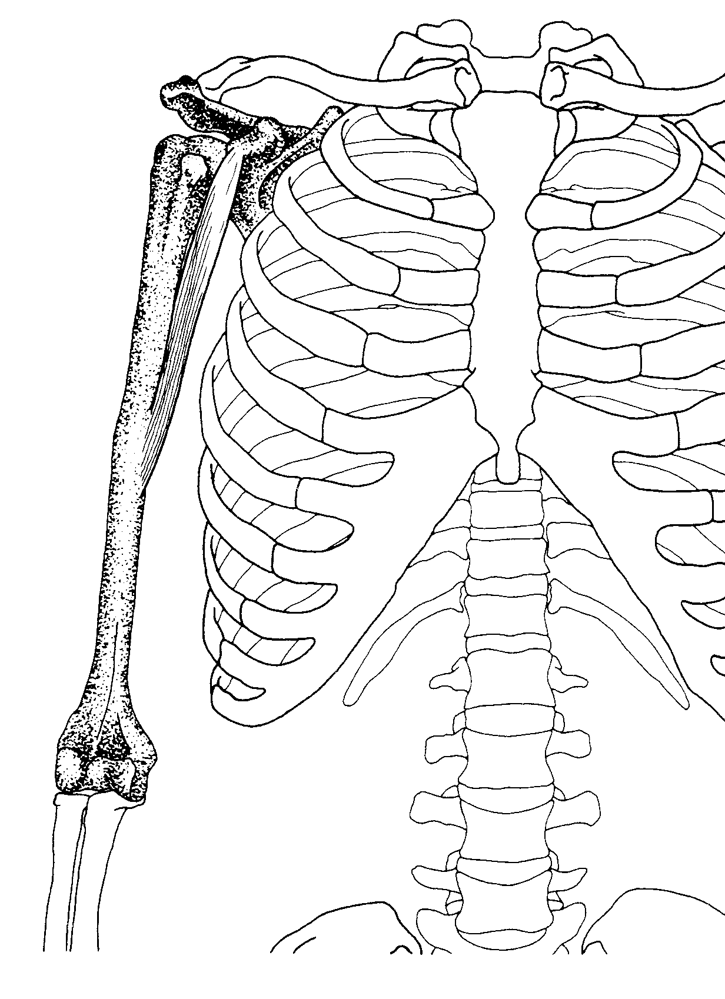
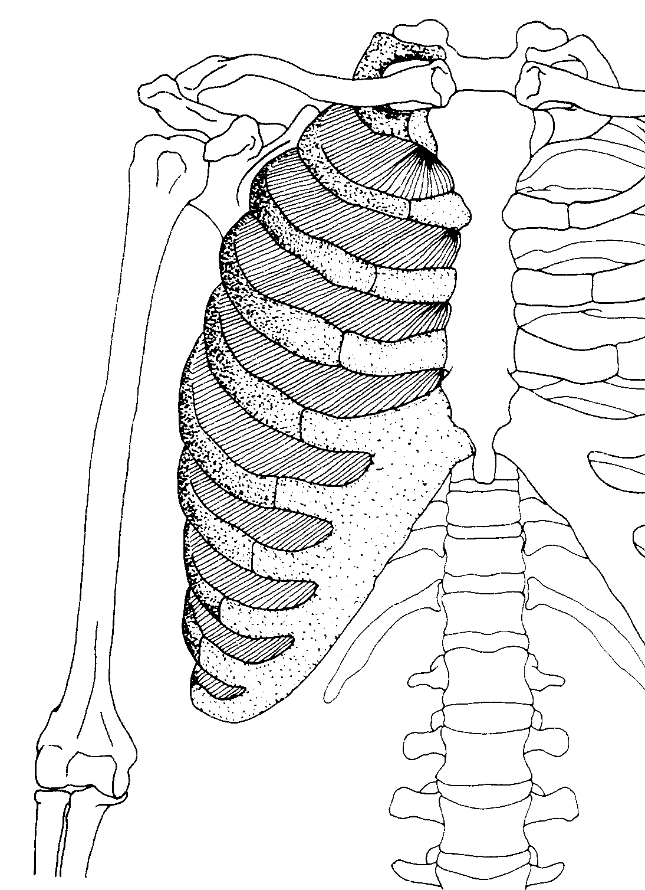
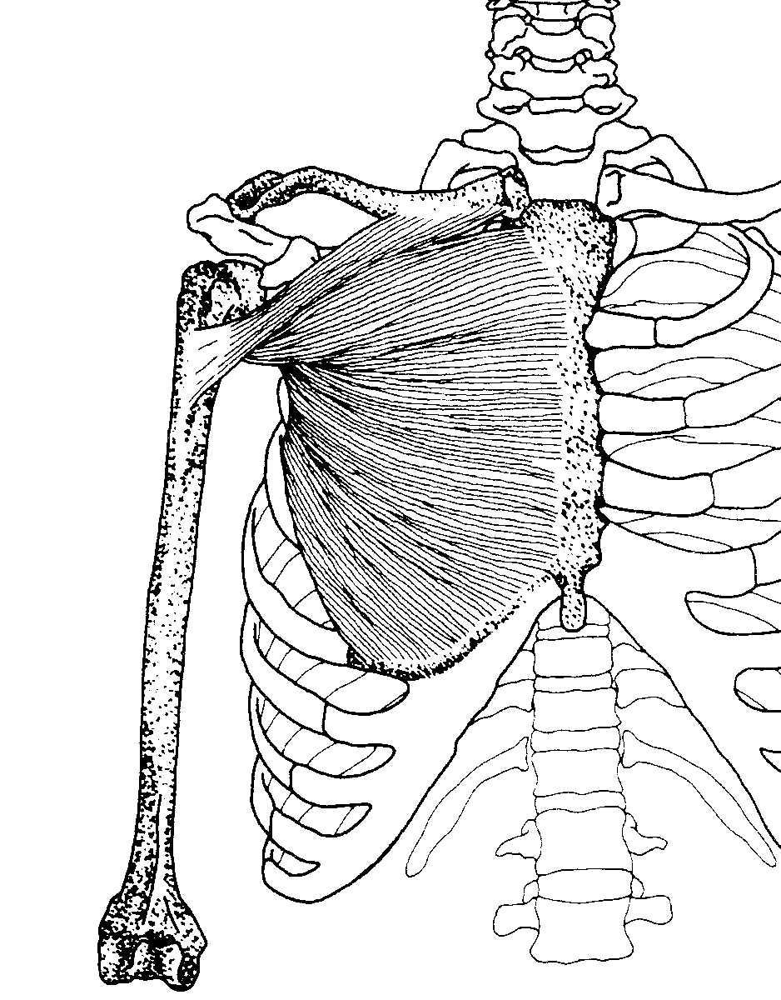
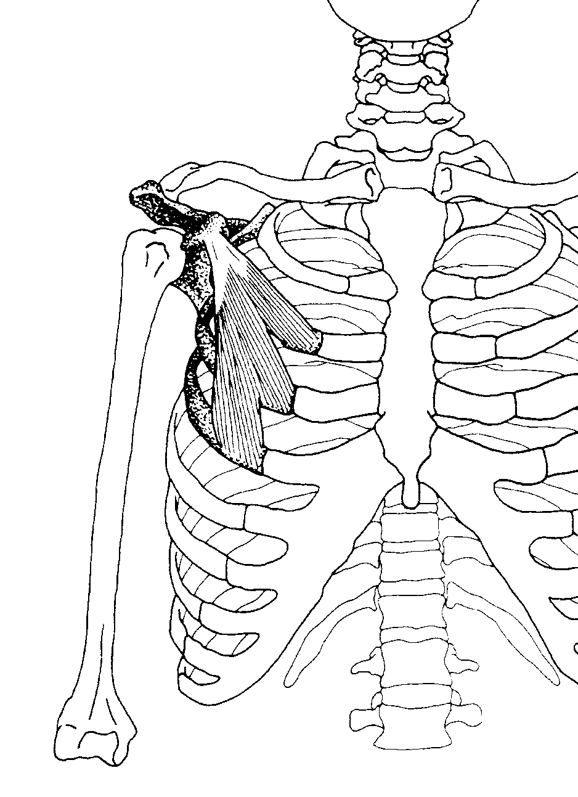
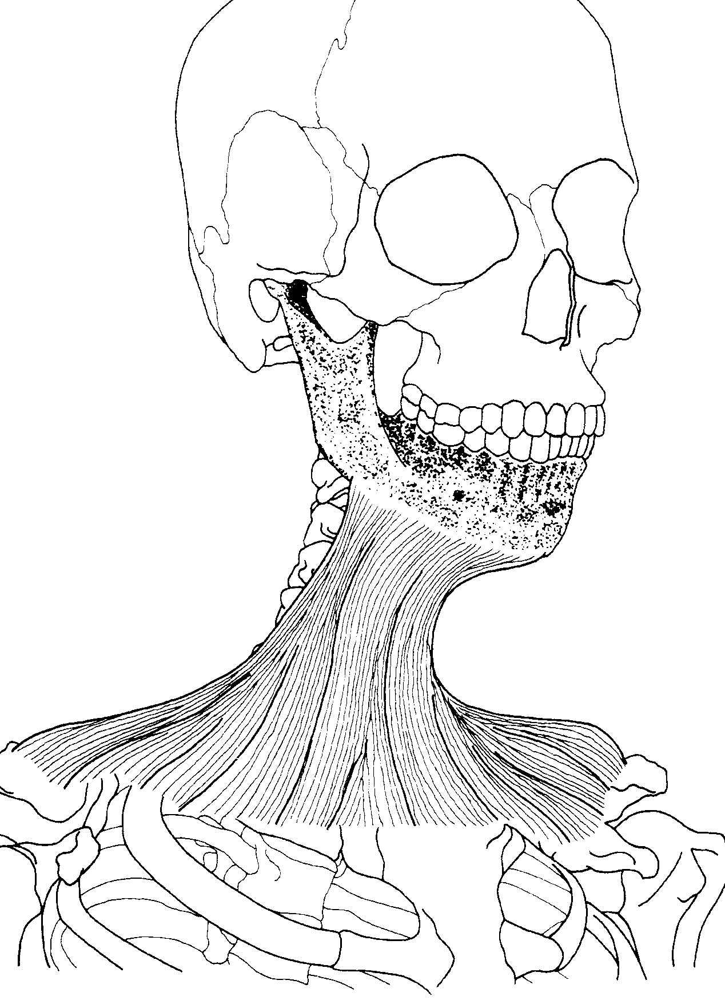
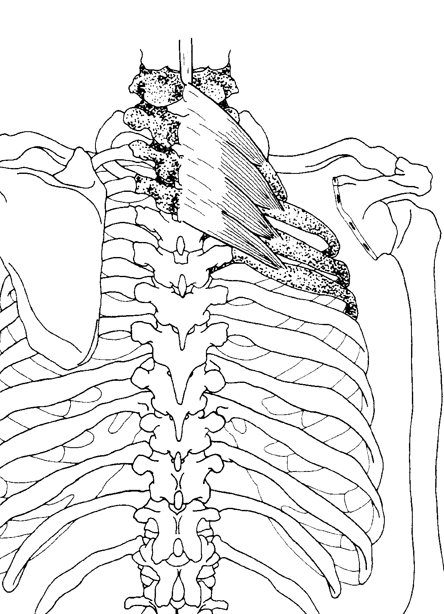
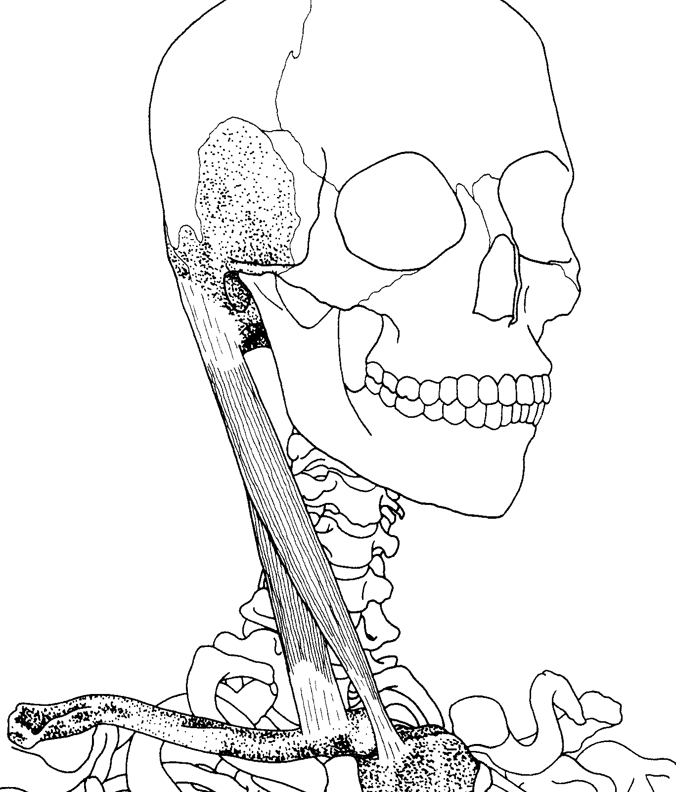
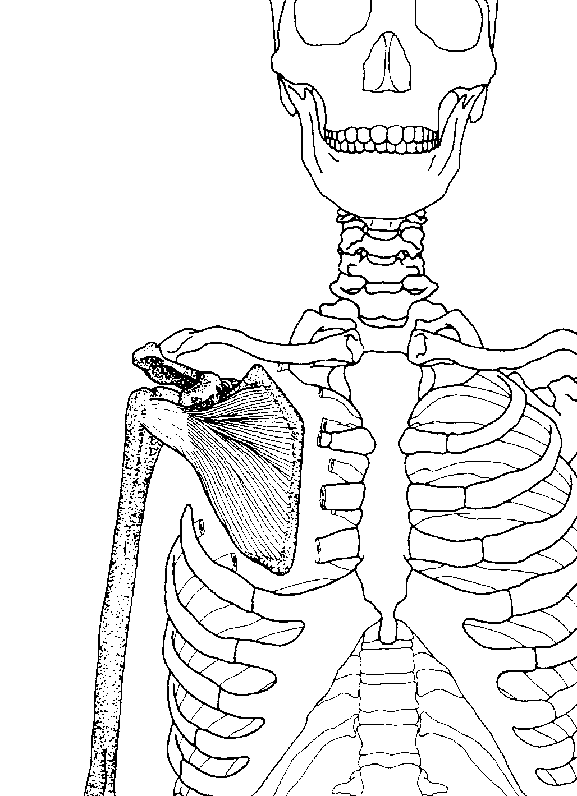
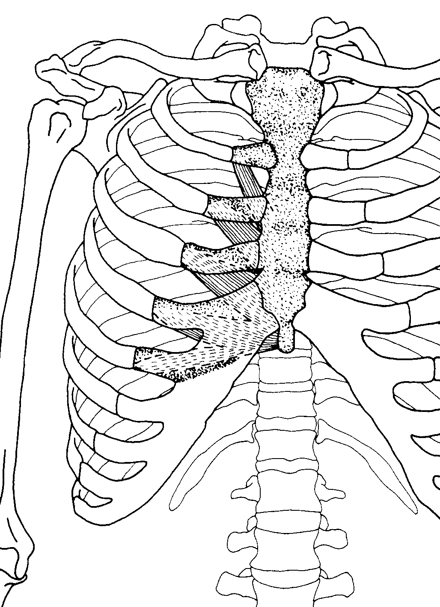

Coracobrachialis
Origin: tip (apex) if the ciracoid process of scapula
Insertion: middle third of the medial surface and border of the humerus
Action: weakly adducts arm (flexion unsubstantieted), aids in stabilizing humerus
Nerve: musculocutaneous nerve (C6,C7)

Deltoid
Origin: anterior position-anterior border and superior surface of the lateral third of the clavicle; middle portion-lateral border of the acromion process; posterior portion-extends and laterally rotates arm
Insertion: deltoid tuberosity, on the middle of the lateral surface of the shaft of the humerus
Action: anterior portion-flexes and medially rotates arm; middle portion-abducts arm; pposterior portion-extends and laterally rotates arm
Nerve: axillary nerve (C5,C6)

Intercostales externi
Origin: lower margin of upper eleven ribs
Insertion: superior border of rib below(each muscle fiber runs obliquely and inserts toword the costal cartilage)
Action: draw ventral part of ribs upward, increasing the volume of the thoracic cavity for inspiration
Nerve: intercostal nerves

Intercostales interni
Origin: from the cartilages to the angles of hte upper elebem ribs
Insertion: superior border of the rib below (each muscle fiber runs obliquely and inserts away from the costal cartilage)
Action: draw ventral part of ribs downward, decreasing the volume of the thoracic cavity for expiration
Nerve: intercostal nerves

Pectoralis major
Origin: clavicular part-medial half of the clavicle; sternocostal part-sternum, upper six costal cartilages, aponeurosis of external olique
Insertion: lateral lip of intertubercuular (bicipital) groove of the humerus
Action: both parts adduct, medially rotate arm; clavicular part flexes arm from full extension; sternocostal part extends the flexed arm
Nerve: medial and lateral pectoral nerves (C5-C8, T1)

Pectoralis minor
Origin: external surfaces if the third, fourth and fifth ribs
Insertion: coracoid process of the scapula
Action: draws scapula forward and downard, raises ribs in forced inspiration
Nerve: medial pectoral nerve (C8,T1)

Platysma
Origin: substaneous fascia of upper one-fourth of chest just below the clavicle
Insertion: substaneous fascia and muscles of chin and jaw, mandible
Action: depresses and draws lower lip laterally, draws up skin of chest, depresses mandible
Nerve: cervical brawnch of facial nerve

Serratus posterior superior
Origin: ligamentum nuchae, spinous processes of seventh cervical and first few thoracic vertebrae
Insertion: upper borders of the second through fifth tibs lateral to their angles
Action: raises ribs in inspiration
Nerve: T1-T4

Sternocleidomastoid
Origin: sternal head-manubrium of sternum
clavicular head-meidal part of clavicle
clavicular head-meidal part of clavicle
Insertion: mastoid process of temporal bone, lateral half of superior nuchal line of occipital bone
Action: one side-bends neck laterally, rotates head to opposite side
both sides together-flexes neck, draws head ventrally and elevates chin, draws sternum superiorly in deep inspiration
both sides together-flexes neck, draws head ventrally and elevates chin, draws sternum superiorly in deep inspiration
Nerve: spinal part of accessory nerve (C2, C3)

Subclavius
Origin: junction of the first rib with it's costal cartilage
Insertion: groove on the inferior (lower) suurface of the clavice
Action: depresses clavicle, draws shoulder forward and downward, streadis clavicle duringg movements of shoulder girdle
Nerve: c5,c6

Subscapularis
Origin: subscapular fossa on the anterior surface of scapula
Insertion: lesset tuberosity (tubercle) of the humerus, ventral part of the capsule of the shoulder joint
Action: medially rotates arm, stabilizes glednohumeral joint
Nerve: upper and lower subscapular nerves (C5,C6)

Transversus thoracis
Origin: inner surface of lower portion of sternum and adjacent costal cartilages
Insertion: inner surfaces of costal cartilages of the second through sixth ribs
draws venrtal part of ribs downward, decreasing the volume of the thoracic cavity for forceful expiration
Nerve: intercostal nerves